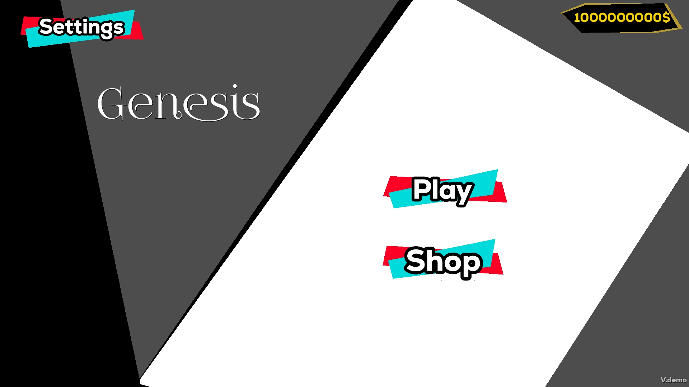
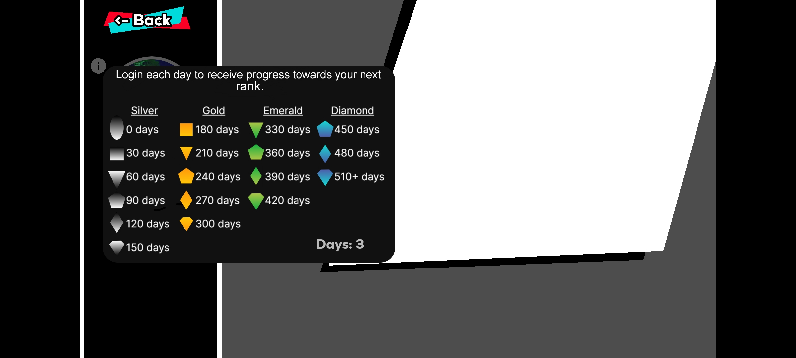
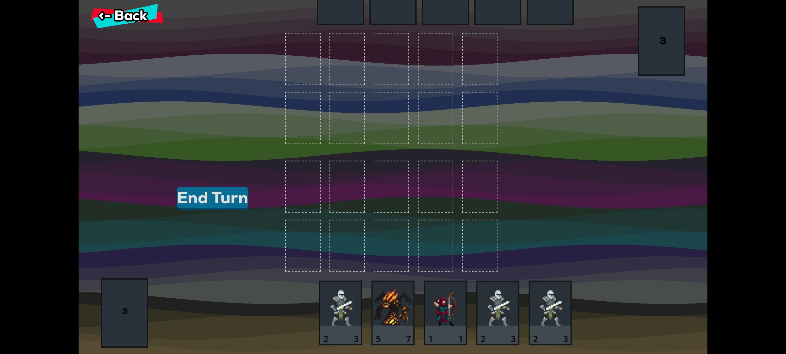

App 1: Genesis



Genesis é um jogo de cartas baseado em turnos que combina estratégia, habilidade e criatividade. Os jogadores constroem seus baralhos personalizados e enfrentam adversários em batalhas táticas, onde cada decisão conta.
- Mecânica única: Utilize cartas de ataque, defesa e habilidades especiais.
- Construção de Baralhos: Personalize sua estratégia com diversas cartas.
- Modos de Jogo: Partidas solo, multiplayer ou contra IA.
- Arte Imersiva: Gráficos vibrantes e trilha sonora envolvente.